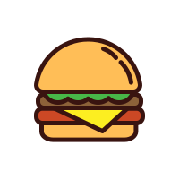

<div class="custom-radio-buttons">
  <div class="form_radio_btn">
    <input
      id="radio-1"
      type="radio"
      name="radio"
      value="burgers"
      [formControl]="searchSpec"
      checked
    />
    <label class="radio_btn_content" for="radio-1">
      
      <div>Burgers</div>
    </label>
  </div>
  <div class="form_radio_btn">
    <input
      id="radio-2"
      type="radio"
      name="radio"
      value="pizza"
      [formControl]="searchSpec"
    />
    <label class="radio_btn_content" for="radio-2">
      
      <div>Pizza</div>
    </label>
  </div>
  <div class="form_radio_btn">
    <input
      id="radio-3"
      type="radio"
      name="radio"
      value="pasta"
      [formControl]="searchSpec"
    />
    <label class="radio_btn_content" for="radio-3">
      
      <div>Pasta</div>
    </label>
  </div>
</div>

<!-- <label class="radio-control">
  <input type="radio" name="money" value="rub" />
  <span class="radio-input">
    <mat-icon matSuffix [inline]="true">fastfood</mat-icon>
    <span>Burgers</span>
  </span>
</label> -->
